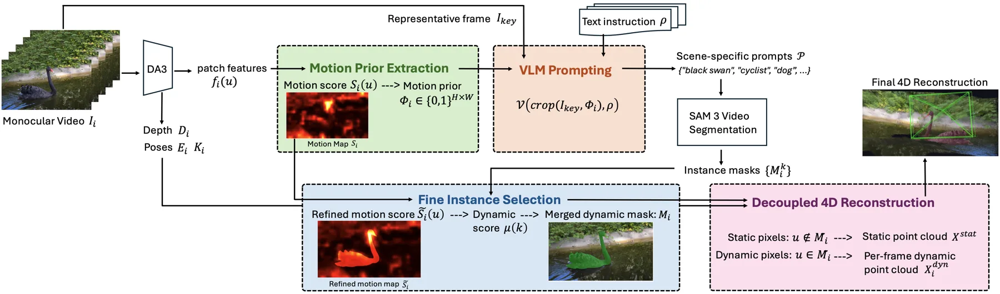
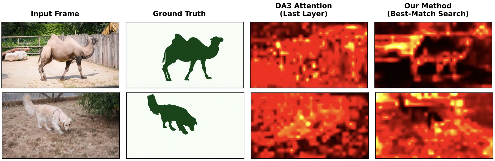
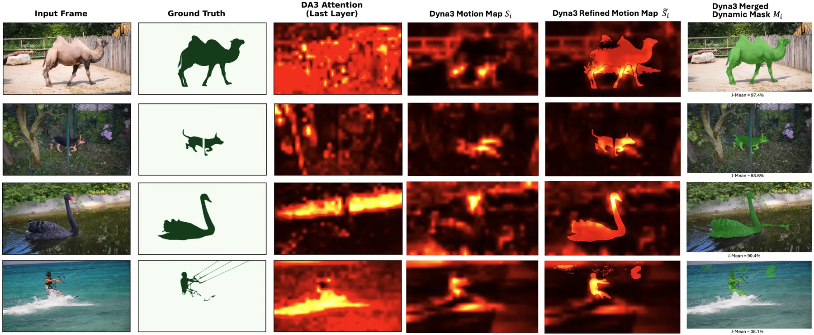

Dyna3：用深度基础模型做 VLM 引导的免训练 4D 重建
Dyna3: VLM-Guided Training-Free 4D Reconstruction via Depth Foundation Models
免训练地把深度基础模型 DA3 扩展到 4D：用最佳匹配特征搜索做运动判别 + VLM 生成提示给 SAM3 做实例分割；DAVIS-2016 J-Mean 65.04（VGGT4D 59.50），TUM-dynamics 位姿 2.9× 快/5.3× 省内存，4D 重建 0.70 s/3.74 GB。
J/F-Mean
speedup
time/mem
ablation
作者、单位与技术谱系 · Research context
作者与单位
研究脉络
- Depth Anything 3（DA3）方法基座关系：直接以 DA3 作为几何骨干，仅推理期扩展，不微调。[论文第 3 节与参考[10]]
- Easi3R / VGGT4D（免训练 4D）上游对照关系：作为依赖对应训练骨干的免训练 4D 方法对照，本方法证明深度模型也可行。[论文第 1、4 节]
- 本篇推进：最佳匹配运动先验 + VLM/SAM3本篇推进关系：用最佳匹配搜索与 VLM 引导分割，把纯深度模型扩展到动态 4D。[论文第 1 节]
合作网络
- UC Davis ↔ Genies Inc. 跨机构署名UC Davis IFM Lab → Genies Inc.关系：共同署名[arXiv 首页署名]
- 对 SAM 3 的技术依赖Dyna3 实例分割 → SAM 3关系：明确技术依赖[论文摘要与第 3 节]
作者与单位取自 arXiv 首页署名；脉络依据论文引用与自述；未发现公开代码声明，故不登记代码节点。
方法本质拆解 · What actually changed
是不是微调？
完全免训练：DA3、VLM、SAM 3 全部冻结，方法只在推理期组合它们的输出，没有任何梯度更新。可变的只有推理时的匹配搜索、VLM 提示与掩码细化策略。这也是它相对 Easi3R/VGGT4D 的关键差异。
有没有额外约束？
没有新增学习损失或硬几何约束；隐式先验来自 DA3 的深度/射线图与 RANSAC 位姿分解。运动判别用最佳匹配得分作为无监督运动先验，实例边界由 SAM 3 提供，静态背景做跨帧对齐、动态点云逐帧保留作为结构性约束。
推理/后端到底做了什么？
推理是免训练流水线：DA3 出深度与射线图→RANSAC 分解位姿→最佳匹配搜索出运动先验→VLM 生成提示→SAM 3 实例分割→渐进式掩码细化→静态背景对齐 + 动态点云。无 BA、无逐场景优化，正是其低内存与高效率的来源。
方法本质是什么？
本质是发现「深度基础模型的跨视图特征在最佳匹配搜索下也能暴露运动不一致」：静态结构可全局一致匹配、动态结构不能，于是无需对应训练也能分离动静。它没有做的是提升 ATE（仍高于 VGGT4D），也未摆脱对 VLM/分割质量的依赖。
输入为单目视频；改变的位置是用最佳匹配运动先验+VLM 提示+SAM3 分割替代对应训练骨干做动静分离；约束/合并动作是射线图位姿分解 + 渐进掩码细化 + 静态背景跨帧对齐；直接效果是免训练、低内存地得到 4D 重建与稠密采样位姿。

动机与问题Motivation
动机与问题
深度基础模型 DA3 的注意力只为深度一致性训练，不含跨帧匹配语义，因此直接用于动态场景会漏掉运动物体。已有免训练 4D（Easi3R、VGGT4D）依赖对应关系训练的骨干，代价是二次方内存增长、难以稠密采样。论文要问的是：纯深度模型的特征里是否也隐含运动判别信号，以及能否在不引入对应训练的前提下把动态与静态解耦。
方法Method
方法总览
流程分三步：先用 DA3 预测逐帧深度 D_i 与稠密射线图，并用 RANSAC 分解射线图得到外参 E_i 与内参 K_i（作者称比 camera-token 头更可靠）。第二步由 patch 相似度的最佳匹配搜索算运动得分 S_i，得到粗运动先验 Φ_i（静态表面能全局匹配、动态物体匹配差）。第三步用运动先验引导 VLM 生成场景特定文本提示给 SAM 3 做实例分割，再经渐进式动态掩码细化区分「哪些物体动」与「有哪些物体」；重建时把场景解耦为跨帧对齐的静态背景与逐帧动态点云。
关键技术细节
运动判别不靠注意力而靠「最佳匹配搜索」：把 patch 做全局搜索，静态 patch 无论出现在邻帧何处都能匹配上，动态 patch 匹配差，故高分即动态候选。运动先验只是粗定位，精确边界交给 SAM 3 的实例分割；VLM 负责生成「该场景里哪些物体会动」的场景特定提示，避免固定类别集。位姿用射线图分解而非 camera-token 头，作者在消融中确认前者跨场景更稳；重建把静态背景做跨帧对齐、动态点云逐帧保留。

实验Experiments
实验设置
数据集覆盖四类任务：动态物体分割用 DAVIS-2016/2017，位姿估计用 TUM-dynamics 与 Sintel，4D 重建用相应动态基准。指标：分割用 J-Mean（区域相似）与 F-Mean（边界精度）；位姿用 ATE、RTE、RRE 以及时间/内存；重建用质量与耗时/显存。对照为 Easi3R、VGGT4D、MonST3R；效率在单卡上对比，并额外做时间步长（stride）敏感性实验以展示稠密采样的价值。
实验数字与比较
分割（论文表 1）：DAVIS-16 Ours J-Mean/F-Mean 65.04/66.93，VGGT4D 59.50/55.47、Easi3R 48.92/45.29；DAVIS-17 Ours 58.73/62.46，VGGT4D 56.45/51.09。位姿（论文表 2/3）：TUM-dynamics Ours RTE 0.024、15.64 s、24.7 GB，VGGT4D RTE 0.020 但 45.53 s、130.1 GB；Sintel Ours RTE 0.040 最优、3.26 s/10.2 GB，VGGT4D 0.046、28.03 s/45.2 GB。步长敏感性（论文表 4/5）：TUM-dynamics stride 30→3 使 RTE 从 0.140 降到 0.024（5.8×）、RRE 从 13.7° 降到 2.5°，而 VGGT4D 在 stride 3 时 OOM。
消融/失败边界
组件消融（论文表 7）：只用注意力做运动检测 J-Mean 仅 8.16%；改用最佳匹配运动先验升到 29.65%（+21.5pp）；加实例/最佳匹配到 33.51%；加 SAM 3 实例分割到 53.35%（+19.8pp）；再加运动感知实例选择到 65.04%（+11.7pp），说明「特征运动先验 + 实例分割」缺一不可。4D 重建效率（论文表 6）：Ours 0.70 s/3.74 GB，VGGT4D 2.26 s/16.70 GB，Easi3R 7.14 s/11.85 GB。失败边界：论文承认 DA3 的注意力本身不编码运动（附录 C 专门论证）；ATE 上仍高于 VGGT4D（0.121 对 0.016），因为它继承深度模型的效率而牺牲了部分跨帧一致性优化。
局限与迁移Limitations & Transfer
局限与待核验
作者明确承认 DA3 的注意力层不编码运动、需要靠最佳匹配与 VLM/分割补足；方法对 VLM 提示质量与 SAM 3 分割有依赖。我们的待核验项：论文在四个数据集上验证，但多为短视频序列；VLM 生成提示的失败模式（如少见物体、强遮挡）未系统分析；跨数据集泛化与真实机器人序列上的稳定性待验。
与你研究路线的关系
可迁移模块是「用最佳匹配特征搜索做动态/静态判别」：可插到我们的地图维护里，标记高运动残差的点并避免其污染静态地图。第二是「免训练、低内存地扩展基础模型」：它示范了如何在不重训的前提下把静态几何基础模型用到动态场景，契合我们对成本可控的路径偏好。下一步最小实验：在我们的序列上比较「注意力判别 vs 最佳匹配判别」的动态掩码质量，并测其对里程计/建图精度的下游影响。



